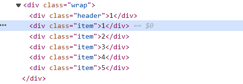
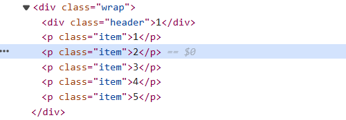
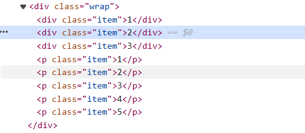

引言 Introduction
- 选择某个或某些元素以应用其定义的样式|规则
- 大多数选择器是向下选择，如后代；还可以平行选择，如兄弟 + ~；甚至可以向上选择，如 :has
- 更多信息，请访问 MDN - selector
<div class = "box"></div>
.box{}
<div id = "box"></div>
#box{}
*{
margin: 0;
padding: 0;
box-sizing: border-box;
}
| item | desc |
|---|---|
| [attribute] | 选择带有指定属性的元素 |
| [attribute="value"] | 选择带有指定属性和值的元素 |
| [attribute^="value"] | 选择指定属性以指定值开头的元素 |
| [attribute$="value"] | 选择指定属性以指定值结尾的元素 |
| [attribute*="value"] | 选择属性包含指定值的元素 |
a[title]{}
input[type='radio']{}
img[src^='http://']{}
img[src$='.jpg']{}
:root[style*="--theme: light"] {
--theme-color: #f40;
color-scheme: light;
}
:root[style*="--theme: dark"] {
--theme-color: #089;
color-scheme: dark;
}
| item | desc |
|---|---|
| :link | <a> 初始状态/为访问过；静态样式 |
| :visited | 访问过/点击后状态；较少使用 |
| :hover | 鼠标置于元素上时；使用最广泛；移动端无效 |
| :active | 单击时的状态；多用于提示；较少使用 |
| :target | 当前锚点选中时；使用 ID 指定锚点 |
a {
font: inherit;
color: inherit;
text-decoration: none;
}
a:link,
a:visited {
border-bottom: 1px solid #ccc;
}
a:hover,
a:focus {
border-color: #f40;
color: #f40;
}
a:active {
background-color: #f40;
color: #fff;
}
.wrap:focus-within {
border-color: #ff0;
}
| item | desc |
|---|---|
| :focus | 获取焦点 - received focus |
| :checked | 元素选中 - checked or toggled to an on state
radio (<input type="radio">) checkbox (<input type="checkbox">) option (<option> in a <select>) |
| :valid | 验证有效 - contents validate successfully |
| :invalid | 验证无效 - contents fail to validate |
| :focus | 获取焦点时[使用 tab 查看获取焦点效果] |
| :focus-within | 如果有子元素获取焦点时，即：选择包含有获得焦点元素的祖先元素 |
| :in-range | 在指定范围 - current value is within the range limits |
| :out-of-range | 超出指定范围 - current value is outside the range limits |
| :disabled | 元素功能被禁止生效时 |
| :placeholder-shown | 显示占位符时；可用于验证 |
input[type='text']:focus+label {
color: #f40;
}
input[type='radio']:checked+label {
color: #f40;
}
button {
cursor: pointer;
}
button:disabled {
cursor: not-allowed;
}
input:invaild:placeholder-shown{
//
}
| item | desc |
|---|---|
| :nth-child(n) | 第几个孩子；孩子从1开始
matches elements based on the indexes of the elements in the child list according to their position |
| :first-child | 第一个孩子 - the first element |
| :last-child | 最后一个孩子 - the last element |
| :only-child | 唯一的子元素/孩子 |
:nth-child(even)//选择序号为偶数的元素 :nth-child(odd)//选择序号为奇数的元素
:nth-child(2n)//同even；选择序号为偶数的元素 :nth-child(2n+1)//同odd：选择序号为奇数的元素
:nth-child(3n)//选择序号为3、6、9等元素 :nth-child(3n+1)//选择序号为1、4、7、10等元素
:nth-child(-n+3)//前3 - 选择序号为3、2、1的元素；:nth-child(3-n)错误 :nth-last-child(-n+3)//后3
tr:nth-child(odd) {
background-color: #dcb0ff;
}
tr:nth-child(even) {
background-color: #faccff;
}
| item | desc |
|---|---|
| first-of-type() | 选择指定类型第一个 |
| last-of-type() | 选择指定类型最后一个 |
| nth-of-type() | 选择指定类型第几个 |
.item:nth-of-type(n+2) {
color: #f40;
}



//定义
:root {
--title-h: 100px;
--main-color-white: #f3f3f3;
--main-color-red: #ff0f5b;
--main-color-purple: #be01fe;
--main-color-blue: #01b4ff;
--main-color-green: #2dfc52;
--main-color-orange: #ff7f50;
--main-color-gray: #333849;
accent-color: var(--main-color-red);
}
//使用
.warn {
font-weight: 600;
color: var(--main-color-red);
}
tr:has(th) {
background-color: #fff;
}
select:has(option[value="jd"]:checked)+.cont img.jd {
display: block;
}
select:has(option[value="jd"]:checked)+.cont img:not(.jd) {
display: none;
}
//如果包含有一个图形img和一个紧跟着图形的段落p，则选中
.card:has(img + p) {
}
//匹配到包含有<ol>或<ul>的文章
article:has(ol, ul) {
}
//选中直接兄弟是dt的dt
dt:has(+ dt){
}
//选中<h2>，其相邻兄弟是：<p>或类为red的<ul>
h2:has(+ p, + ul.red) {
}
//某个ID被选中时
body:has(#p0:checked) {
}
//自适应布局-没有--left-width就使用48px；当元素left处于hover状态时，定义--left-width变量为30%
.grid {
display: grid;
transition: 300ms;
grid-template-columns: var(--left-width, 48px) auto;
}
.grid:has(.left:hover) {
--left-width: 30%;
}
//传统方案
ul li:not(:last-child) {
margin-right: 10px;
}
//优化方案：使用相邻兄弟选择器实现
ul li + li {
margin-left: 10px;
}
//优化方案：使用flex的gap实现
ul {
display: flex;
gap: 10px;
}
h2:not(header h2, section h2) {
color: #f40;
}
//为多个元素指定样式
:where(.left, .center, .right):hover {
background: crimson;
}
//为<body>和<main>指定水平垂直居中
:where(body, main) {
display: flex;
justify-content: center;
align-items: center;
}
//使用公共类更加直观
.center-item {
display: flex;
justify-content: center;
align-items: center;
}
.box h1,
.box h2,
.box h3 {
color: #f40;
}
.box :is(h1, h2, h3) {
color: #f40;
}
//或者当前元素是哪些状态，如表单的伪类选择器
input:is(:hover, :focus) {
border: 1px solid #f40;
outline: none;
}
li {
//
}
li:empty {
display: none;
}
selector::pseudo-element {
property: value;
}
li::marker {
content: '✝ ';
font-size: 1.2em;
}
*,
*::before,
*::after {
display: block;
box-sizing: border-box;
}
li::before {
content: '>';
}
li::before {
content: '\21E8';
}
li::before {
content: attr(data-ind);
}
li::before {
content: url(./imgs/avatar.jpg);
display: inline-block;/* MUST */
overflow: hidden;/* MUST */
}
li::before {
content: '';
display: inline-block;
width: 24px;
height: 24px;
background-image: url(../imgs/logo1.png);
background-size: cover;
border-radius: 50%;
}
li {
list-style: none;
}
li::before {
content: '\e6e0';
font-family: 'iconfont';
color: #f40;
}
li::before {
content: counter(sn) '\21e8 ';
}
<div class="bar" style="--per:85;--num:'85';--info:'\e881'"></div>
.bar::before {
content: var(--info);
font-family: 'iconfont';
}
.bar::after {
content: var(--num)'%';
}
//HTML5
<div class="box active"></div>
//CSS3
.box {
opacity: 0.5;
}
.box.active {
opacity: 1;
}
ul,ol {
margin: 0;
padding: 0;
box-sizing: border-box;
}
:is(ul,ol) {
margin: 0;
padding: 0;
box-sizing: border-box;
}
| item | desc |
|---|---|
| ∞ | 重要选择器 ! |
| 1000 | 行内样式 style |
| 0100 | ID选择器 # |
| 0010 | 类选择器 . | 伪类选择器 : | 属性选择器 [] |
| 0001 | 标签选择器 tag | 伪元素选择器 :: |
| 0000 | 通配符选择器 * |
div {
color: #f40 !important;
}